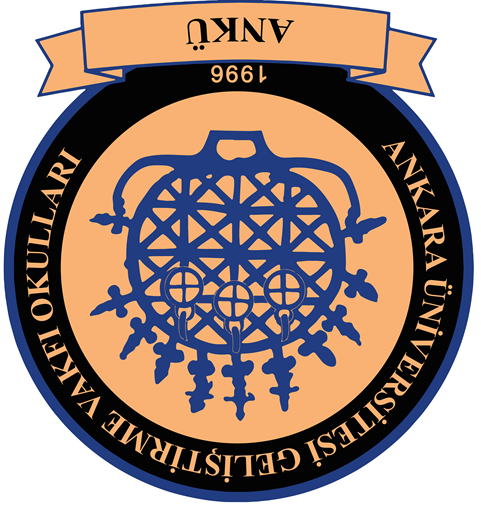

2022 seçimleri. Okul Sınıf Birliği kazandı. hakkında gram bilgi duymadım.
2023 seçimleri. Bizimkiler kazandı. hiçbir şey yapmadılar.
2024 seçimlerinin adayları bir şey yapacak gibi görünüyordu.
son saniye çıkan AFB... hiçbir şey yapmadı.
tembellikte Fikir Birliği var yani.
partinin adı ANKÜ Fikir Birliği çünkü.
eminim ki idare mobil oyun turnuvasına izin verir. XD
2025 seçimlerinde Öğrenci Partisi çıkageldi ve Meclis'i kurdu.
sorun şu: çevre ve tiyatro kulübü nerede? ANKÜ ailesi grubu nerede? kardeş okul maçları nerede?
...
meclis çok yavaş işliyor.
Meclisi seviyordum, web sitesi yapıyım dedim, Mayıs'ta bitti.
o ayın toplantısında kimse gram bilmiyordu.
Haziran yayınlarız dendi, iptal oldu.
ücra bir izinle anca yapabildim.
anca.
oy döneminde damga çalışmıyordu, kalemle işaretledim.
oyum geçersiz sayıldı.
sonra vekil seçildim.
partimi sordular, yok dedim.
garipsediler.
resmî gazete olarak kabul edilen her şeyi temize çektim.
müdür bile farkında,
hiçbir şey olmadı.
temize çekmek için 1 aydır yazman kâğıtlarını istiyorum,
haftalarca ertelendi.
artık vazgeçtim.
sormayacağım yazman kâğıtları nerede diye.
zaten pek gerek yoktu.
koyabildiğim tüm resmî belgeleri koydum.
:(